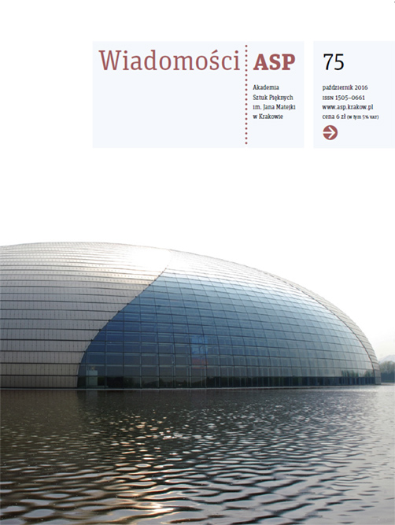
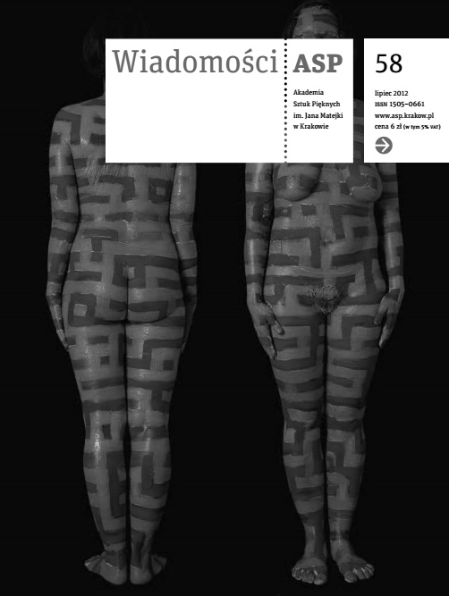

Proces indywiduacji
Wystawa rzeźby
(...) Zestawienie dwóch materii, obcych sobie, tak odmiennych w strukturze swej budowy – szkła i metalu – sprawia, że dosłownie stają do siebie w opozycji. Ich wzajemna ograniczoność, jednej wobec drugiej, także sprawiła, że nie było to połączenie, ale zderzenie. (...)
Link do artykułu

Świadomość rozdarć
Fragment pracy dyplomowej
(...) Chcę przedstawić trudny do zrozumienia paradoks w samej istocie artysty, poprzez opozycję materii chcę ujawnić antynomiczność ludzkiej egzystencji. Artysta, walcząc z racjonalnością świata, decyduje się na alogiczność własnej
świadomości, przez co odbierany jest jako odmienny. Podczas poszukiwań zmaga się z tymi odmiennymi światami,
próbując je razem połączyć. (...)
Link do artykułu